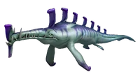
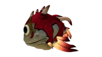
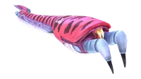
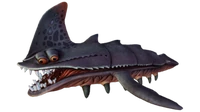
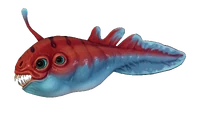
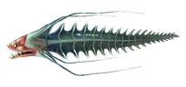
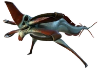

Carnivores
| Faune | Attitude | Biome |
|---|---|---|
|  Rôdeur |
Agressif | Forêts d'algues Zone du crash |
|  Poisson-torpille |
Défensif | Bancs calmes Grottes des Bancs calmes Grottes des Forêts d'algues |
|  Serpent-crabe |
Agressif | Cavernes des Champi-gelée |
|  Requin des sables |
Agressif | Plateaux herbeux Zone du crash Dunes |
|  Mordeur |
Agressif | Plateaux herbeux Cavernes des Champi-gelée Île montagneuse Montagnes Dunes |
|  Rôdeur spectral |
Agressif | Rivière perdue |
|  Léviathan Faucheur |
Agressif | Zone du crash Île montagneuse Montagnes Dunes |